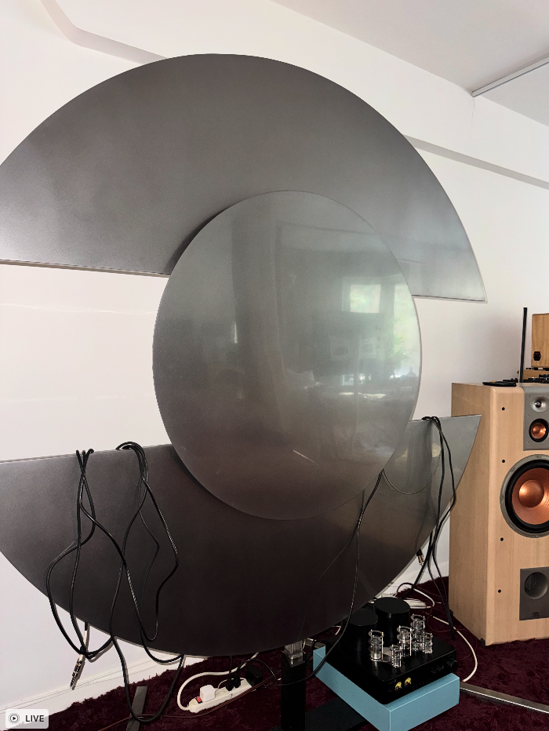
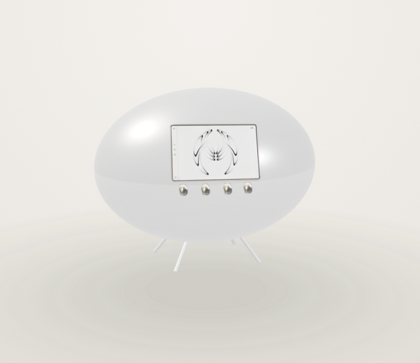
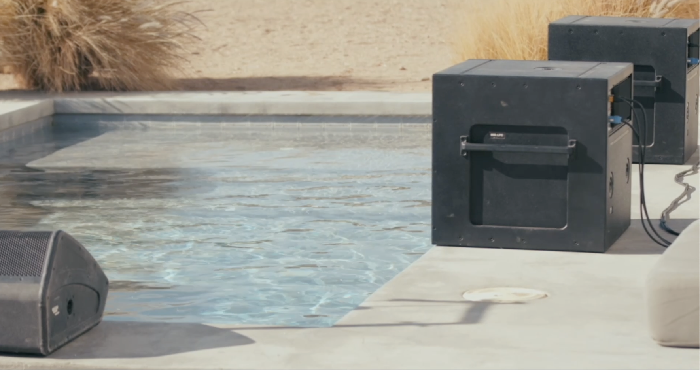
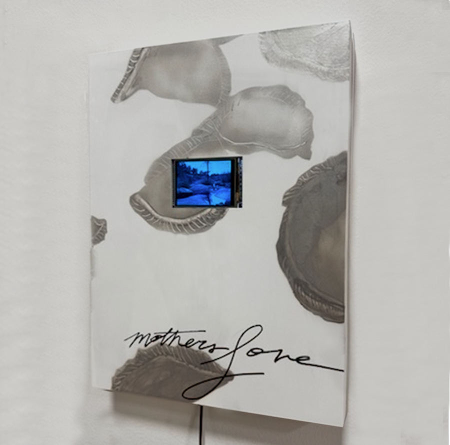
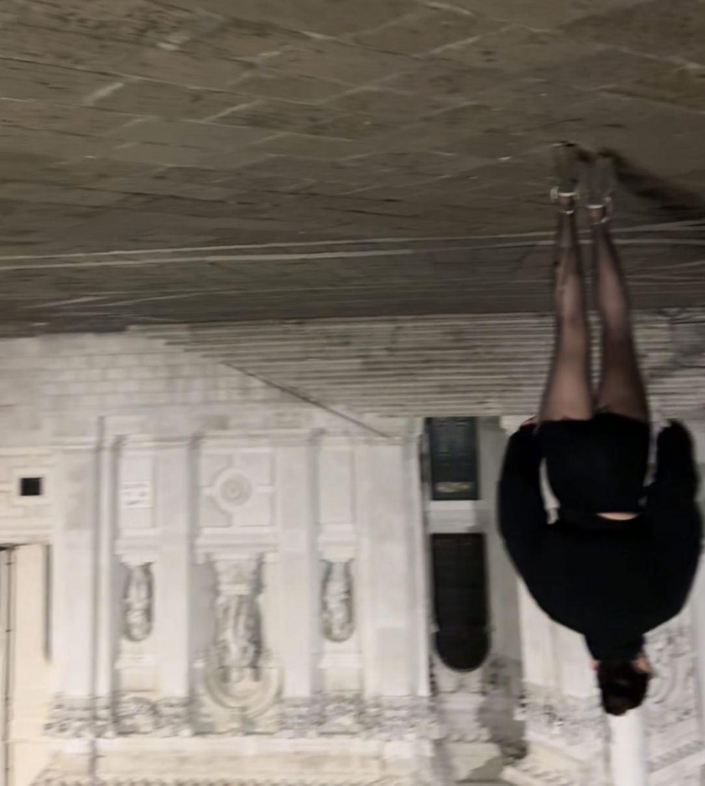

Collector Preview
A private selection of available works. For inquiries or studio visits please contact contact@arressai.com directly.

all my friends are dead or made it (Working Title)
Placeholder description — replace with pricing, edition, availability, and material details for this piece.

no (Working Title)
Performance work with resonating sculpture original sonic composition.

motherBoard (Working Title)
Stand alone modular instrument based on Earth's natural rhythms and scales from each continent.

bassBath
Interviews take place with local community of sculpture site - what problems beg solutions what visions are desired for the future? Sonic composition for sculpture made with proprietary techniques, centering the user experience, de guru-ifying the artist.

us (Working Title)
A series about the spaces and places the artist has found mothering in the wake of her own mother's passing as a young teen.

should i cut bangs?
Video work exploring the performance of a flattened feminine identity gleaned from an ethnographic social media algorithm.
RESEARCH & FRAMEWORKS
HARMONIC ENGINEERING
REGENERATIVE BLUEPRINT OF AN AI SYSTEM
PSYCHOGRAPHIC PROFILING & ALGORITHMIC BIAS
immer FINANCIAL SYSTEMS